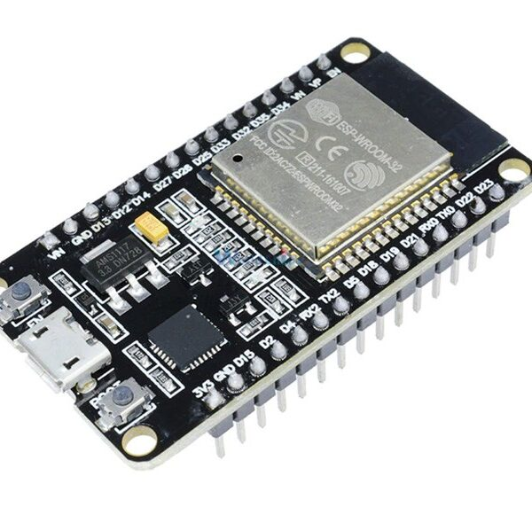
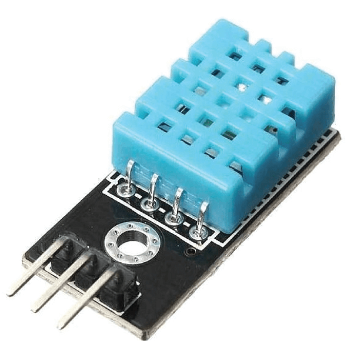
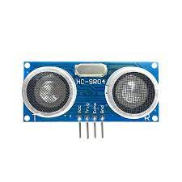
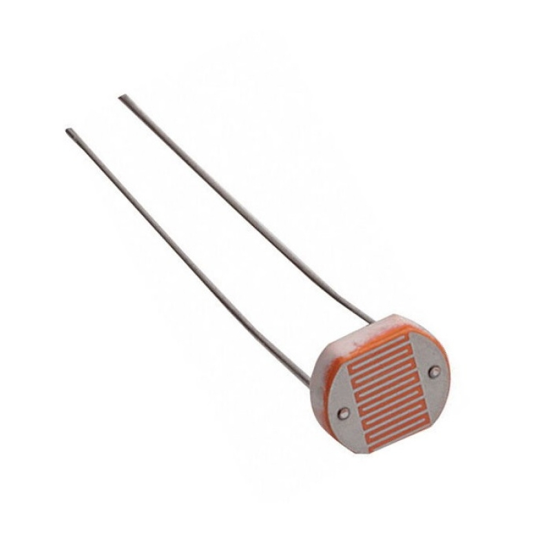
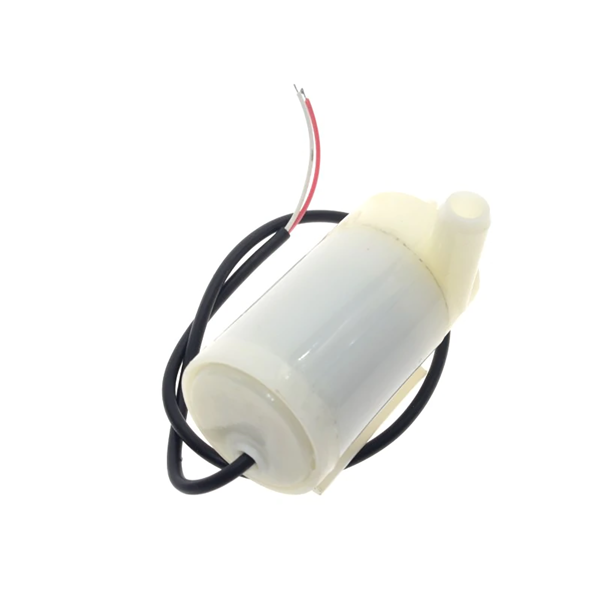
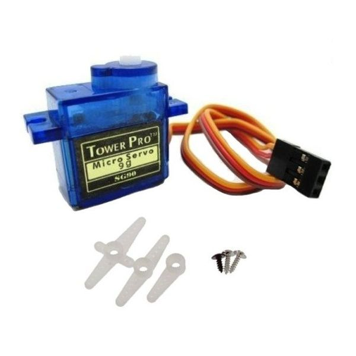
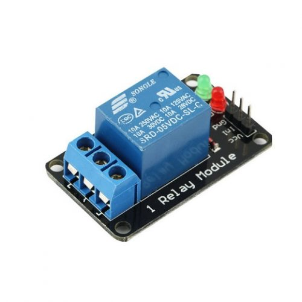

<div class="content">
    <section id="inicio">
        <h1>¡Bienvenido a la Granja Avícola Los Mijos!</h1>
        <div class="carousel">
            <div class="slides">
              <div class="slide active">
                
              </div>
              <div class="slide">
                
              </div>
              <div class="slide">
                
              </div>
              <!-- Agregar más diapositivas según sea necesario -->
            </div>
          
            <button class="prev" (click)="prevSlide()">&#10094;</button>
            <button class="next" (click)="nextSlide()">&#10095;</button>
          </div>
          
        
        <div id="parrafos">
            <p>En la Granja Avícola Los Mijos, nos enorgullecemos de ofrecer un entorno excepcional para la crianza de aves de corral,
                asegurando su bienestar y el más alto nivel de cuidado. Nuestra granja está equipada con tecnología avanzada y sistemas 
                automatizados que nos permiten mantener un ambiente óptimo para nuestras aves.</p>
            <p>Una de las características más destacadas de la Granja Avícola Los Mijos es nuestra capacidad para activar automáticamente 
                diversos sistemas en función de situaciones específicas. Gracias a sensores inteligentes y al monitoreo constante, podemos 
                detectar condiciones ambientales, niveles de alimentación y comportamiento de las aves en tiempo real.</p>
        </div>

        <div class="table-container">
            <table class="centered-table">
                <thead>
                    <tr>
                    <th>Dispositivo</th>
                    <th>Informacion</th>
                    </tr>
                </thead>
                <tbody>
                    <!-- Aquí puedes agregar filas con datos de los sensores y actuadores -->
                    <tr>
                        <td><p>ESP32</p></td>
                        <td>El ESP32 es un microcontrolador de bajo costo y alto rendimiento desarrollado por Espressif Systems. 
                            Es importante debido a su versatilidad y potencial en diversas aplicaciones IoT. Con conectividad Wi-Fi y Bluetooth, 
                            ofrece la capacidad de crear soluciones inalámbricas avanzadas, lo que lo hace fundamental en proyectos de automatización,
                            monitoreo y control remoto.</td>
                    </tr>
                    <tr>
                        <td><p>Sensor DHT11</p></td>
                        <td>El DHT11 es un sensor de temperatura y humedad de bajo costo y fácil integración desarrollado por Aosong Electronics. Es importante debido a su simplicidad y capacidad para medir la temperatura y humedad ambiente en proyectos de IoT y automatización. Su uso amplio y asequible lo hace popular en aplicaciones caseras y comerciales.</td>
                    </tr>
                    <tr>
                        <td><p>Sensor Ultrasónico</p></td>
                        <td>
                            El sensor ultrasonico es un dispositivo que utiliza ondas de sonido de alta frecuencia para medir distancias. Emite un pulso de ultrasonidos y mide el tiempo que tarda en recibir el eco reflejado por un objeto cercano. Es importante en proyectos de detección de objetos, navegación y control de distancias en sistemas robóticos y de automatización. Su versatilidad y precisión lo hacen fundamental en aplicaciones de seguridad, estacionamiento automático, y monitorización de niveles de líquidos, entre otras.</td>
                    </tr>
                    <tr>
                        <td><p>Foto resistencia</p></td>
                        <td>
                            La foto resistencia, también conocida como LDR (Light Dependent Resistor), es un componente electrónico sensible a la luz. Su resistencia varía según la intensidad lumínica que recibe. Importante en electrónica y automatización para detectar luz ambiente, controlar iluminación automática y en proyectos de seguridad y ahorro energético.
                        </td>
                    </tr>
                    <tr>
                        <td><p>Bomba de agua</p></td>
                        <td>
                            La bomba de agua para Arduino es un dispositivo que utiliza el microcontrolador Arduino para controlar su funcionamiento. Es importante en proyectos de riego automático, acuarios y sistemas hidropónicos, permitiendo el suministro controlado de agua. Su compatibilidad con Arduino lo hace ideal para integrarlo en proyectos de automatización y monitoreo de sistemas de agua.                        </td>
                    </tr>
                    <tr>
                        <td><p>Servomotor</p></td>
                        <td>
                            El servomotor es un dispositivo electromecánico que permite controlar con precisión el ángulo de rotación. Importante en proyectos de robótica, automatización y modelismo, donde se requiere movimiento preciso y controlado. Se utiliza ampliamente para mecanismos de dirección, brazos robóticos, control de aeronaves y otras aplicaciones que necesitan movimiento angular específico.
                        </td>
                    </tr>
                    <tr>
                        <td><p>Modulo Rele</p></td>
                        <td>
                            Es un dispositivo electromagnético que funciona como un interruptor controlado por un circuito eléctrico en el que, por medio de una bobina y un electroimán, se acciona un juego de uno o varios contactos que permiten abrir o cerrar otros circuitos eléctricos independientes.
                        </td>
                    </tr>
                </tbody>
            </table>
        </div>
    </section>

